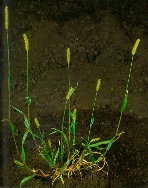
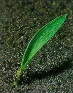
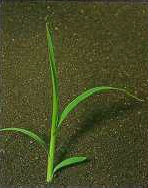

FAKÓ MUHAR
SETARIA GLAUCA (L.) P. Beauv. (SETGL)
ÉLETFORMA: T4
TERMÉS: Pelyvás, toklászos és csupasz állapotban
egyaránt előfordul. A pelyvás, illetve a toklászos szem 2,5-3 mm hosszú, tojásdad. A
legalsó pelyva majdnem a fele, a középső (háti helyzetű) pelyva mintegy a fele, a
legfelső (hasi helyzetű) pelyva majdnem akkora, mint a toklászos szem. A pelyvák
tehát csak kismértékben takarják a szemet. A toklászok sűrűn harántráncoltak. A
csupasz szem 1,8-2,2 mm hosszú, elliptikus, féldomború, éles hasi peremmel,
zöldesszürke, üveges. Ezerszemtömege 2,5-3,0 g.
CSÍRANÖVÉNY: Az érett szemtermések a talajban 4-6
hónapig nyugalmi állapotban maradnak. A nyugalmi állapot oka az, hogy a pelyvák és
a toklászok nem eresztik át a vizet. A szántóföldi csírázás a talajok
fölmelegedése után 15-20 °C-on indul meg. A legtöbb szem 1,5-2 cm mélységből
csírázik. A csírázás fő időszaka május, június. Levéllemeze szembetűnő,
fehértől világoszöld középérrel, mely olykor pirosló, a lemez szélén és a
levéllemezalapon ritkásan hosszú szőrös. A levélhüvelye kopasz és sima, laposra
nyomott és ormós. A legfiatalabb levél begöngyölt. A levélnyelvecskét finom
szőrök koszorúja helyettesíti. Levélfülecske nincs.
KIFEJLETT NÖVÉNY: Júniustól októberig virágzik.
Virágzata kalászképű buga (füzéres buga), amely 3-15 cm hosszú, 1 cm széles, a
tengelye teljesen fedett, mindkét végén keskenyedő, egyenetlenül vastag. A
füzérkék aprók, egyvirágúak, a füzérkék alatt felfelé álló 5-20 db, 10 mm
hosszú sárga, később rókavörös gallérsertékkel. Lefelé simítva a serték
érdesek.
 |
 |